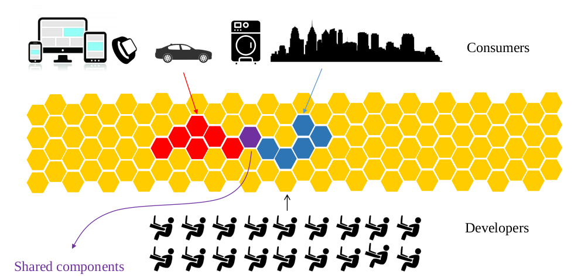

Here we list two main articles from DZone where we illustrate our idea for the future of software development in the cloud.
Containerization and cloud computing are leading us to a new way we are conceiving computational resources
Historically, computer machines were developed for automatizing computation. Starting from abacus to modern computers, the main idea behind computer machines was to increase the power of human brain computation with an external device. Computation machines were theoretically modeled by Alan Turing using his Turing machine and their basic architecture was proposed by Von Neumann.

Why we need new programming languages for dealing with the new coordination machine?
The reason is very simple and intuitive: usual programming languages like C, Java, Python, etc, were developed for facilitating computation programming, not coordination programming. In these languages indeed, communication and coordination are always achieved by exploiting specific libraries or external frameworks, they are not crystallized within the linguistic structure of the programming language.